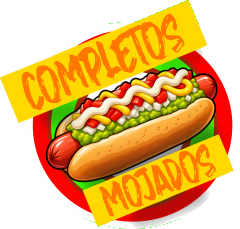

Controla los GC de Completos Mojados desde cualquier equipo y sácalos por OBS.
Una sala guarda tus gráficas y conecta el panel con OBS por internet.
¿Te mandaron un link de control? Pégalo aquí.
Todo queda en este navegador. Úsalo con el panel como dock de OBS en el mismo computador.
Abrir modo localCompletos Mojados · CG v · Los links de control dan acceso total a la sala: compártelos solo con tu equipo.